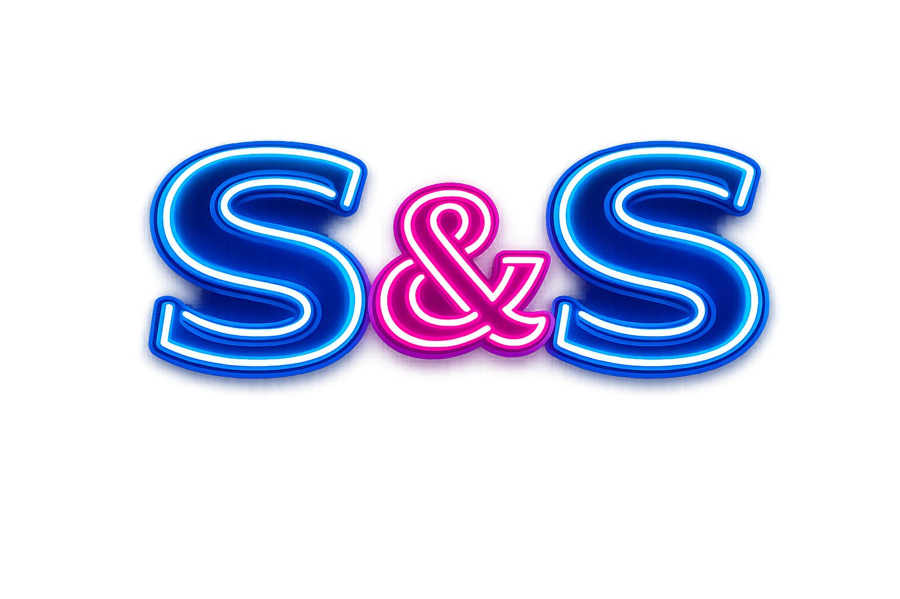
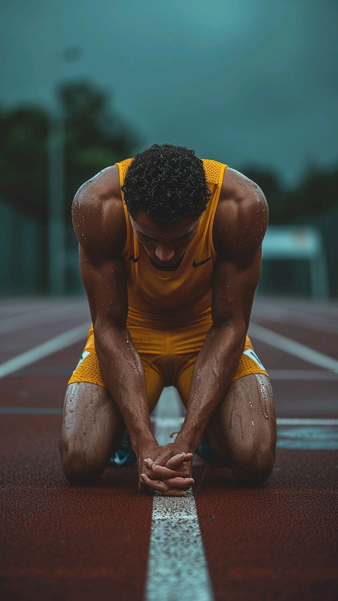
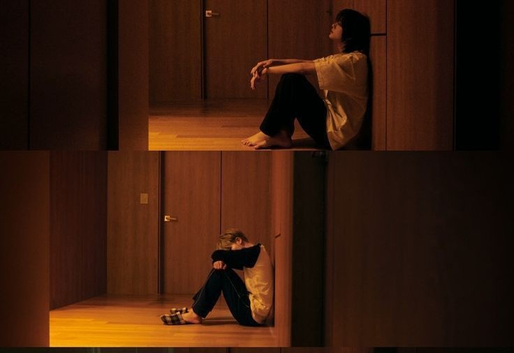
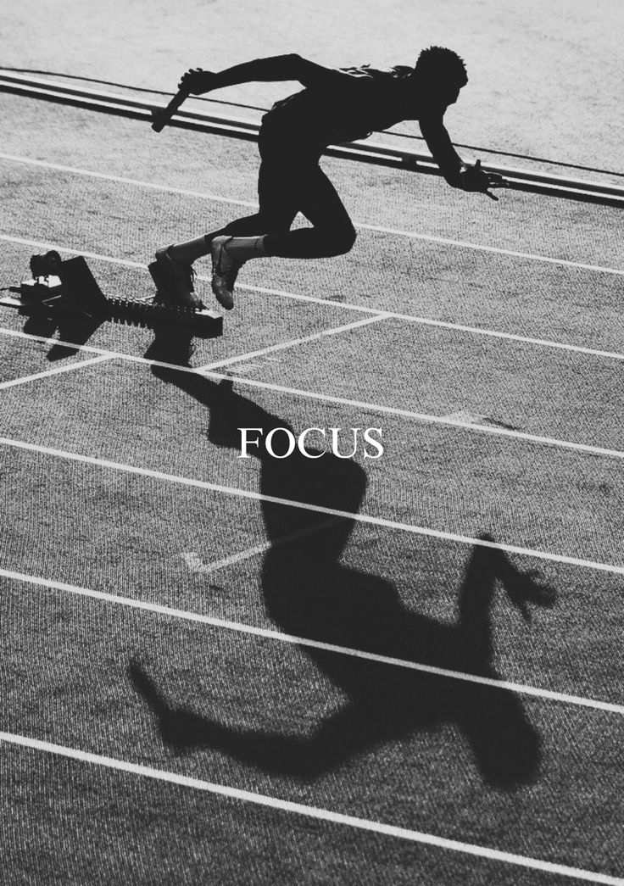

En la actualidad, un montón de gente se lanza al deporte con mucha ilusión y energía inicial. Sin embargo, conforme pasa el tiempo, esa chispa se va apagando y terminan perdiendo el interés. Este cambio no solo genera frustración, sino que a menudo lleva al completo abandono del ejercicio, lo que afecta la salud mental. La desmotivación y el burnout ya no son exclusivos de la élite; afectan a cualquier persona que busca bienestar personal.

Canalizar la desmotivación requiere un cambio de enfoque estratégico para proteger la salud mental del atleta:

La desmotivación no es simple falta de disciplina; es un fenómeno complejo de factores físicos y emocionales. Es fundamental aprender a escuchar las señales de nuestro cuerpo y encontrar un punto medio entre entrenamiento y descanso. El verdadero reto es descubrir el equilibrio que nos permita disfrutar del movimiento y convertirlo en un hábito duradero.

Cuando el entorno asfixia la pasión, no es una debilidad propia, sino una respuesta al estrés del medio ambiente deportivo.
Estado de agotamiento emocional y mental crónico. Es el desgaste profesional llevado al campo de juego.
La presión excesiva de padres y entrenadores por ganar, ignorando el disfrute, es la causa principal de abandono en jóvenes.